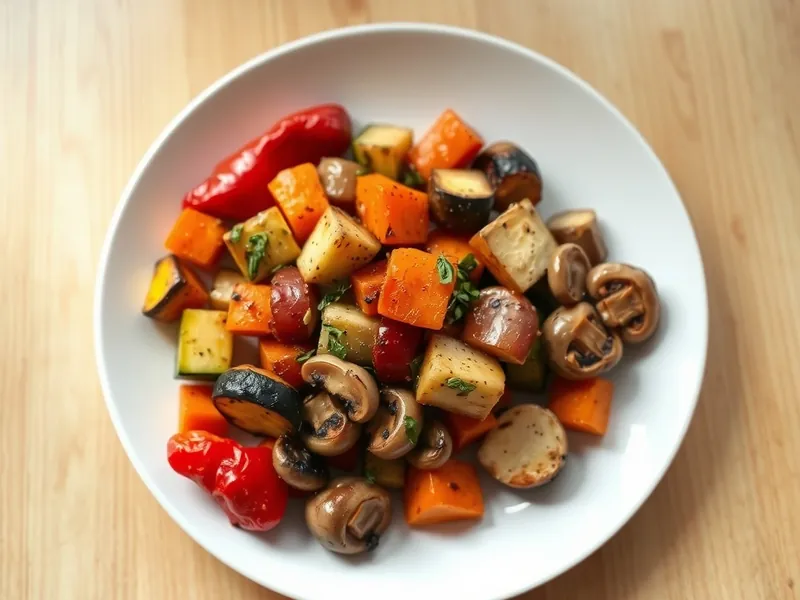

Овощи, запечённые в духовке с травами
Крупно нарезанные перец, кабачок, морковь, лук и грибы, запечённые с чесноком и травами
45 мин4 порц.183 ккал на порциюБ 5 · Ж 11 · У 17Средиземноморская кухня
Открыть в приложении: порции, таймеры, список покупок
Продукты на 4 порц.
- Перец болгарский2 шт
- Кабачок1 шт
- Морковь2 шт
- Лук репчатый2 шт
- Шампиньоны200 г
- Чеснок3 зуб.
- Оливковое масло3 ст. л.
- Сушёные травы1 ч. л.
- Соль1 ч. л.
- Перец чёрный молотый1 щеп.
Как готовить
- Разогрейте духовку до 200 °C (сильный жар).
- Нарежьте перец и кабачок крупными кусками по 3 см, морковь кружками толщиной 1 см, лук дольками, шампиньоны пополам.
- Сложите овощи в миску, добавьте масло, раздавленный чеснок, травы, соль и перец, перемешайте руками.
- Выложите на противень в один слой, морковь в первые 10 минут запекайте отдельно, если она толстая.
- Запекайте 30-35 минут, перемешав в середине, пока овощи не станут мягкими и не появятся подрумяненные края.
Совет. Используйте два противня, если овощей много: в тесноте они дают сок и не подрумяниваются.